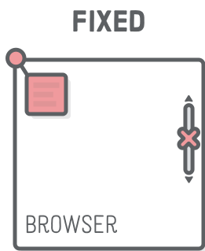

When an element is positioned absolutely, its position is computed according to the position of the nearest "positioned" element, which contains it.
When an element is set to fixed positioning, its position is computed relative to the visible part of the browser in which the page is being displayed.
When we position an relative element it is positioned according to its own position. Top, right, bottom, and left properties have an effect on relative positioned elements, unlike static positioning.